What to look for in April अप्रैल में
Species whose season is April in eastern Uttar Pradesh, according to published accounts. A further 1104 species are about all year.
प्रकाशित स्रोतों के अनुसार जिनका मौसम अप्रैल है। 1104 और प्रजातियाँ साल भर मिलती हैं।
जनवरी · फ़रवरी · मार्च · अप्रैल · मई · जून · जुलाई · अगस्त · सितंबर · अक्टूबर · नवंबर · दिसंबर
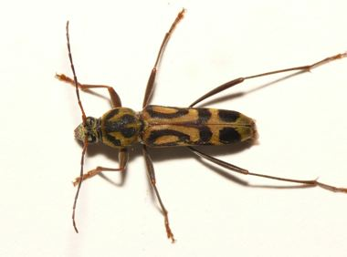
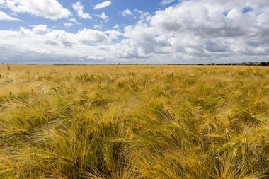

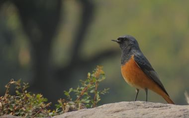
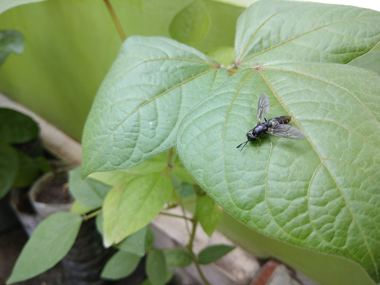

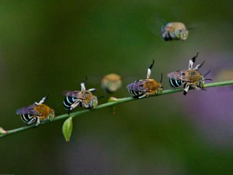
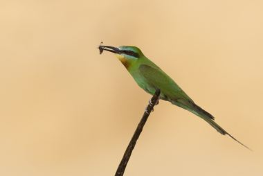
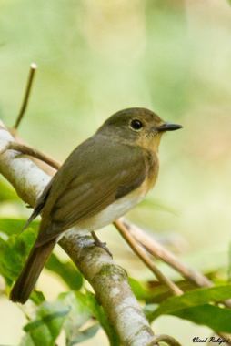

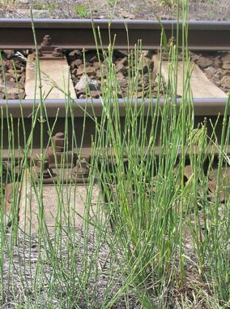

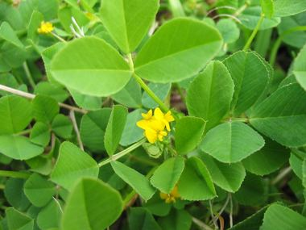


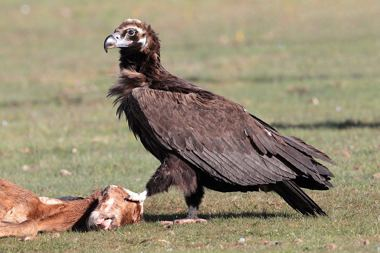

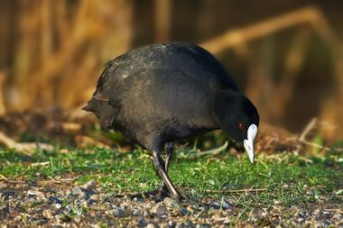
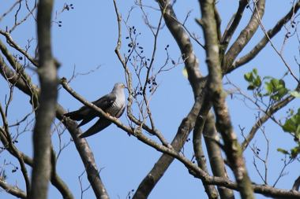


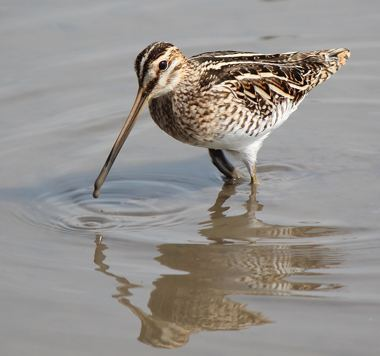

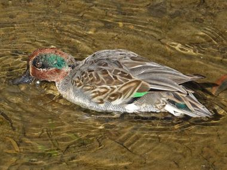

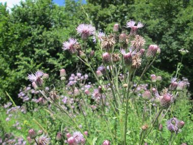
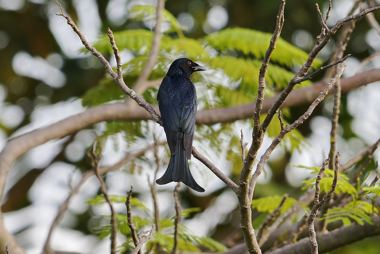

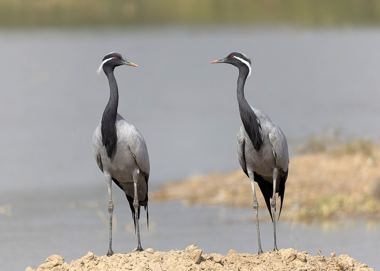
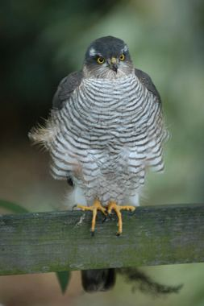
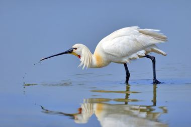


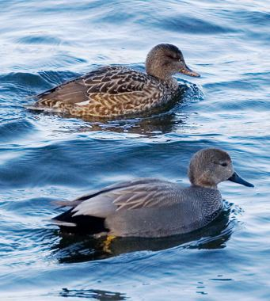
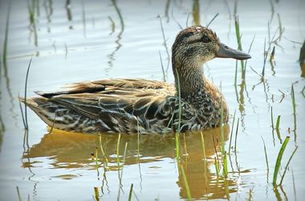
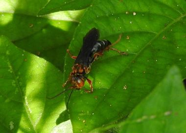
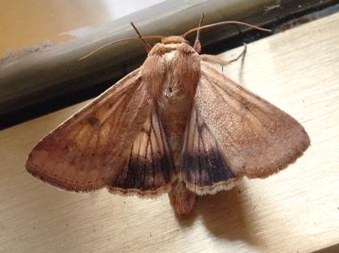
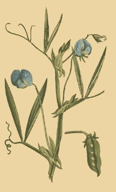


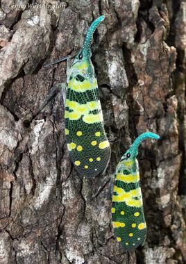

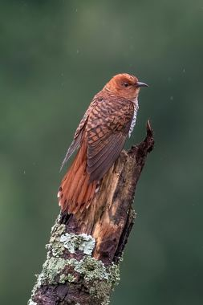

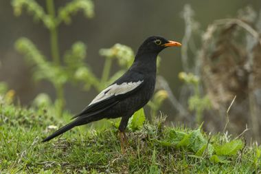

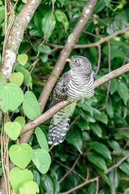
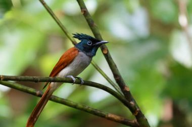
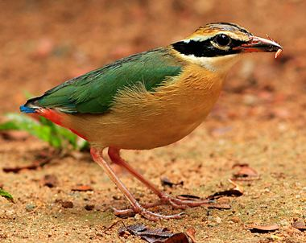

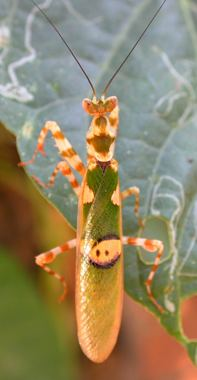

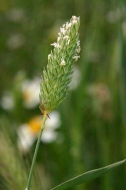
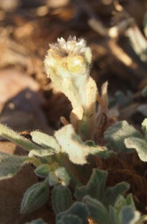
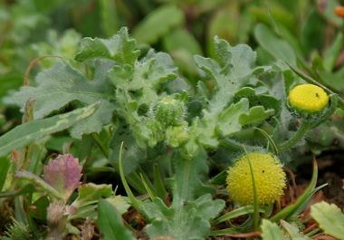
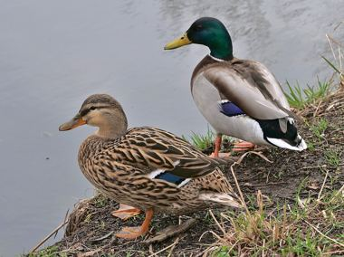
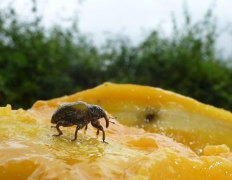
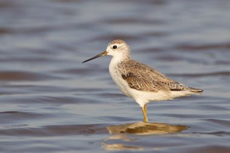
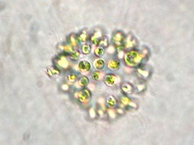
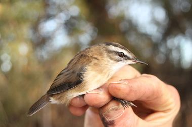
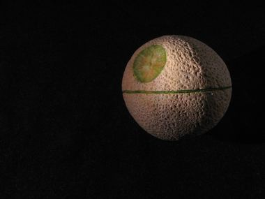


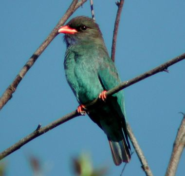
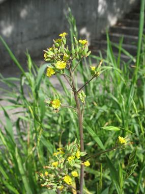

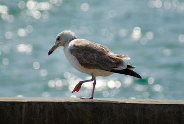


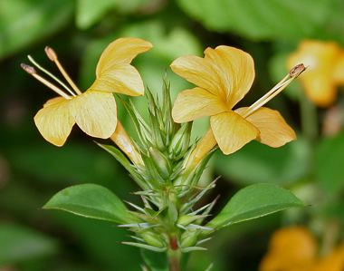
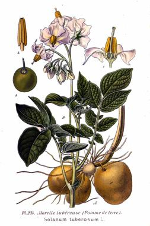

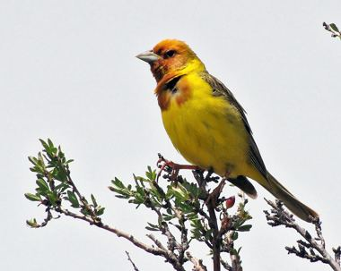
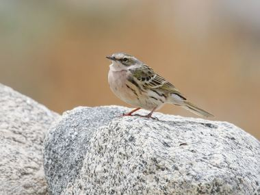


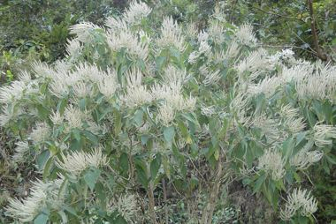


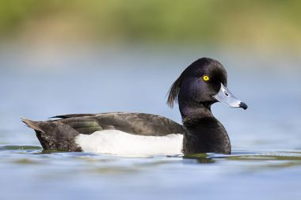
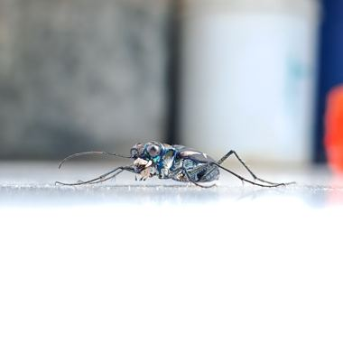